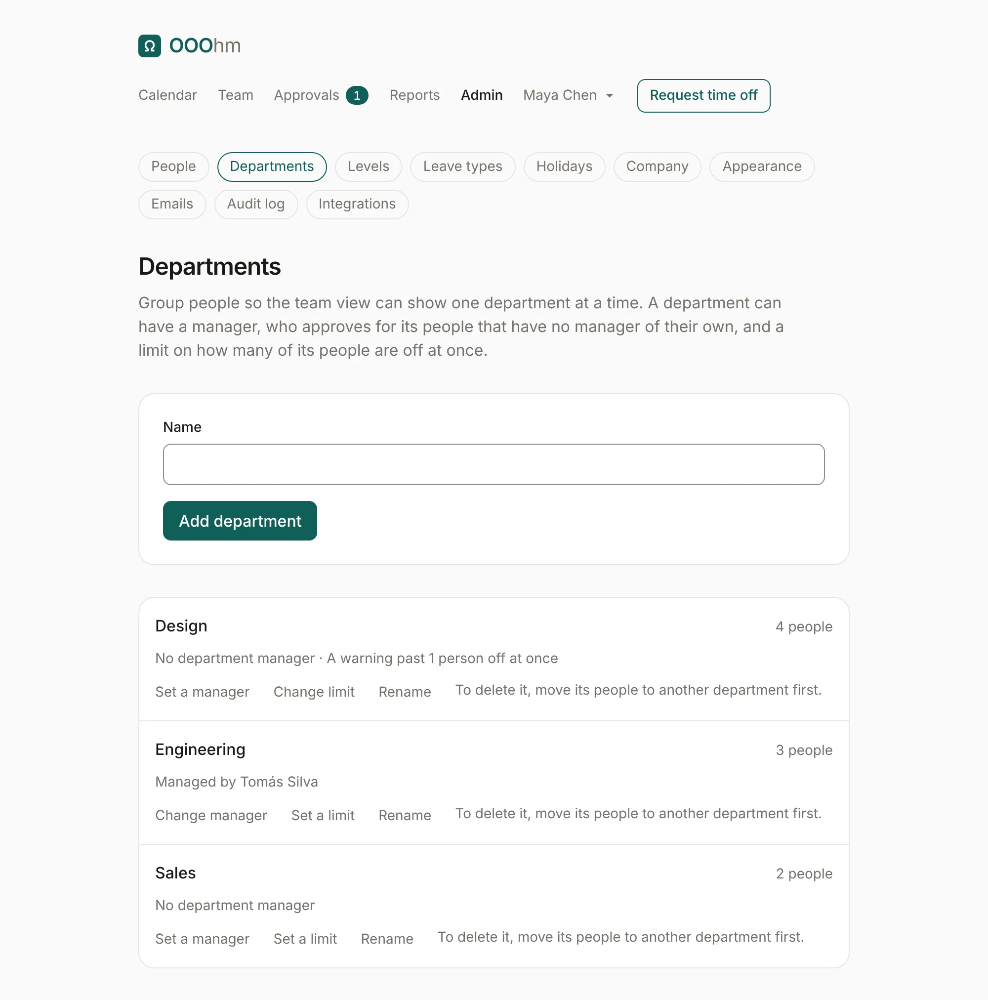
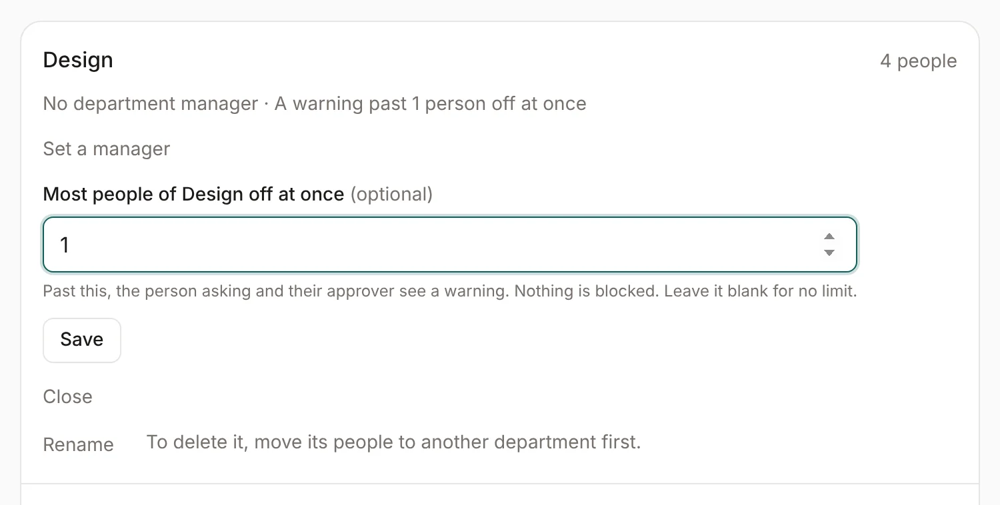
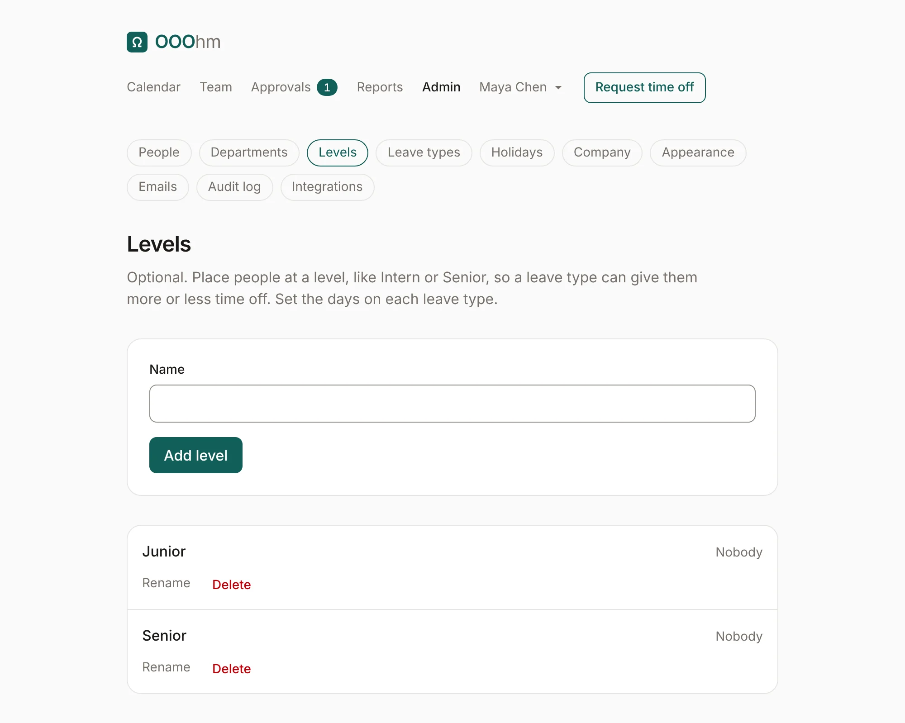
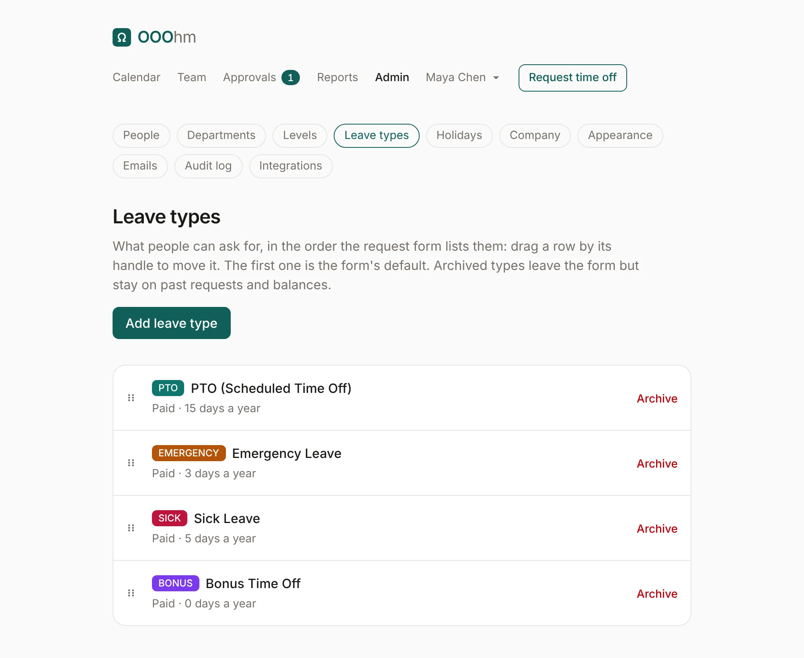
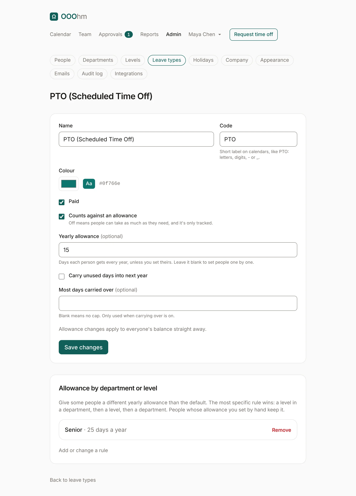

Departments, levels and leave types
Departments
Admin → Departments groups people, so Who's out, the calendar and Reports can show one department at a time. Add department takes a name. Each department shows how many people are in it, its manager and its limit.

| Setting | What it does |
|---|---|
| Set a manager | The department manager approves for people in it who have no active manager of their own. They also see those people's balances and notes like a manager, when the company lets managers see them. |
| Set a limit | Most people of the department off at once (see below). Blank means no limit. |
| Rename | Changes the name everywhere. |
| Delete | Only for an empty department: move its people to another department first. |
Coverage limits
A limit is the most people of one department who should be off on the same day. Past it, the person asking sees a warning under their request, and their approver sees it in bold in the approvals inbox. Nothing is blocked.

Department scoping
With Keep people to their own departments on (Admin → Company), managers and everyone else except admins only see their own department, the departments they manage, and the people who report to them. Off by default.
Levels
Admin → Levels is optional. Place people at a level, like Junior or Senior, so a leave type can give them more or less time off. A level with nobody at it can be deleted; its allowance rules go with it.

Leave types
Admin → Leave types lists what people can ask for, in the order the request lists them. Drag a row by its handle to reorder; the first one is the request's default. Each row sums up the type: paid or unpaid, its yearly allowance, and whether days carry over.

Archive takes a type off the request; past requests and balances keep it. Archived types are listed under Archived, with Restore. Add leave type opens the same form as editing one:

| Setting | What it does |
|---|---|
| Name | What people see, like PTO (Scheduled Time Off). |
| Code | A short label on calendars, like PTO: letters, digits, - or _. |
| Colour | Its colour on calendars, balances and reports. The Aa sample shows text on it stays readable. |
| Paid | Marks it paid or unpaid on the leave type list and in the API. |
| Counts against an allowance | Off means people can take as much as they need, and it's only tracked (for example, sick leave at some companies). |
| Yearly allowance | Days each person gets every year, unless you set theirs. Blank means you set people one by one. |
| Carry unused days into next year | Off by default. On, unused days move to next year when the year rolls over on January 1. |
| Most days carried over | A cap on carried days. Blank means no cap. Only used when carrying over is on. |
Allowance changes apply to everyone's balance straight away. Every balance change is in the audit log.
Allowance by department or level
Under a leave type's settings, rules give some people a different yearly allowance than the default: for example, 25 days of PTO for Senior. A rule can name a department, a level, or both.
The most specific rule wins: a level in a department, then a level, then a department. People whose allowance you set by hand on their allowances page keep it.